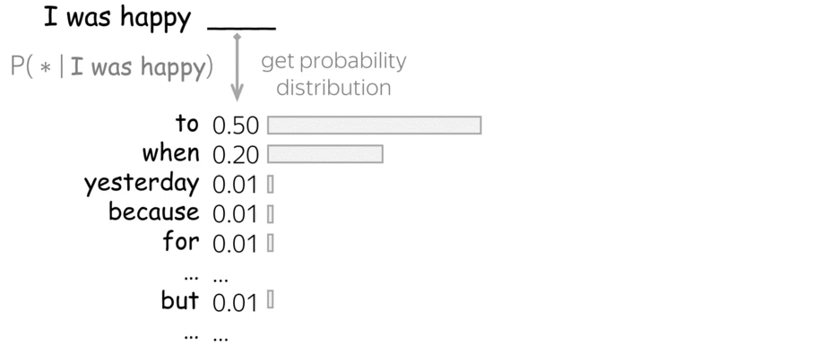
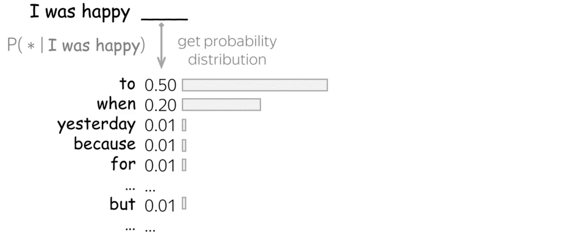
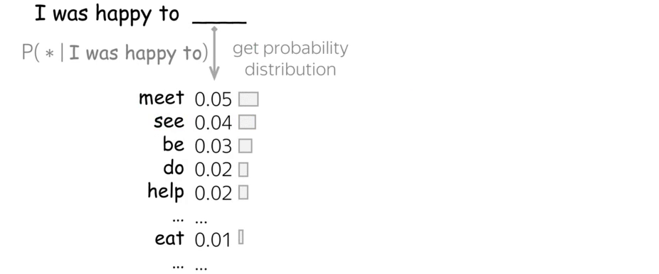
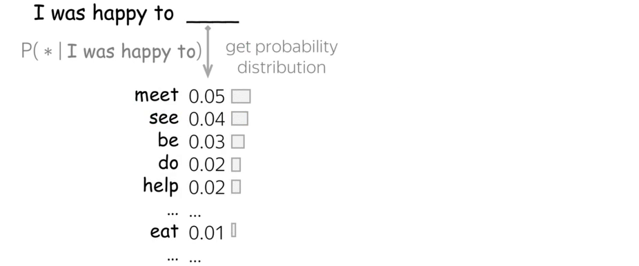

Hitchikers Guide to Large Language Models
Who is this for?
Who is this for?

Key Questions about Large Language Models (LLMs)
- Why do LLMs hallucinate?
- Why does a model generate gibberish at times?
- Why do people troll LLMs asking them to count R's in strawberry?
- Are LLMs even do 1+1?
- Why can't LLMs be trusted to provide source?
- Why LLMs break when you ask about SolidGoldMagikarp?
What is a Large Language Model?
Everything is next word prediction
LLM
Language
World
By learning and modelling language, LLMs transitively model the world.
How to train your own dragon model?
- Borrow few 100 million dollars
- Download all of internet (250B pages; >1PB of data)
- Train for 2-3 months on several thousand GPUs
Training costs big bucks

Typical composition of Training data
Training data is extensively curated
What is in a trained model?
But Pre-training is Just the Beginning
How Chat assistants are trained
Supervised Fine-tuning

Reinforcement Learning from Human Feedback (RLHF)
Under the hood
How next token prediction works?


 

 



Controlling the output of LLMs
Temperature

Top-k sampling

Top-p sampling

Understanding Tokens
Tokens are the smallest units of text recognized by models.
1000 tokens ≈ 750 words
Models can only process a fixed context length measured in tokens.
Splitting text into tokens
It is raining
Character level tokenization
I
t
i
s
r
a
i
n
i
n
g
.
Sub-word level tokenization
It
is
rain
ing
.
Word level tokenization
It
is
raining
.
Putting them all together
https://poloclub.github.io/transformer-explainer/Re-examining Key Questions about Large Language Models
- Why do LLMs hallucinate?
- Why does a model generate gibberish at times?
- Why do people troll LLMs asking them to count R's in strawberry?
- Are LLMs good at 1+1?
- Why LLMs break when you ask about SolidGoldMagikarp?
- Why can't LLMs be trusted to provide source?
How to use Large Language Models
Proprietary Models
Model Properties

Proprietary Models
Runtime Configurable Parameters
from openai import OpenAI
client = OpenAI()
completion = client.chat.completions.create(
model="gpt-3.5-turbo",
messages=[
{"role": "system", "content": "You are a helpful assistant."},
{"role": "user", "content": "Hello!"}
],
temperature=0.7,
top_p=0.95, # use top_p or temp, not both
top_logprobs=3,
max_tokens=1000,
)
Open Source Models
Model Properties
{
"architectures": [
"MistralForCausalLM"
],
"attention_dropout": 0.0,
"bos_token_id": 1,
"eos_token_id": 2,
"hidden_act": "silu",
"hidden_size": 4096,
"initializer_range": 0.02,
"intermediate_size": 14336,
"max_position_embeddings": 32768,
"model_type": "mistral",
"num_attention_heads": 32,
"num_hidden_layers": 32,
"num_key_value_heads": 8,
"rms_norm_eps": 1e-05,
"rope_theta": 1000000.0,
"sliding_window": null,
"tie_word_embeddings": false,
"torch_dtype": "bfloat16",
"transformers_version": "4.42.0.dev0",
"use_cache": true,
"vocab_size": 32768
}
Open Source Models
Runtime Configurable Parameters
from transformers import AutoTokenizer, AutoModelForCausalLM
tokenizer = AutoTokenizer.from_pretrained("EleutherAI/gpt-neo-1.3B")
model = AutoModelForCausalLM.from_pretrained("EleutherAI/gpt-neo-1.3B")
inputs = tokenizer("Hello, my name is", return_tensors="pt")
# Similar settings to OpenAI's API
outputs = model.generate(
**inputs,
max_length=1000,
do_sample=True,
temperature=0.7,
top_p=0.95,
top_k=0,
num_return_sequences=1,
)
Addressing LLM Limitations
Characteristics of LLMs
- üîÑ Predicts next token stochastically
- üß© Coherent within fixed context length.
- üìñ Built-in Knowledge with a cut-off date
Working with LLMs can be a frustrating experience
Addressing LLM Limitations
Retriever-augmented generation (RAG)

Tool Use

Deliberate problem solving using thoughts

Choosing the Right Large Language Model (LLM)
Different Kinds of Models
Pre-trained Models
- e.g., Llama 3, GPT Base
Instruct-Tuned Variants
- e.g., GPT-3.5-turbo, Llama-3.2-3B-Instruct
Coding Assistants
- Codestral, CodeLlama, Davinci Codex etc.
Mixture-of-Experts
- e.g., GPT-4, Mixtral
Evaluating LLMs is complex and multifaceted. There's no single perfect metric.
- Benchmarks: Task-specific, tricky broader applicability
- Human Evaluation: Inconsistent, challenging consensus
- Bot Evaluation: Not always aligned with human judgement
LM Chatbot Arena
üèÜ Elo rating system for model ranking
Aider LLM Leaderboards

Coding tasks benchmkarks
Berkeley Function-Calling Leaderboard
Function calling benchmkarks
Practical Considerations
1 Licensing and Legal
- Commercial Services
- Regional availability
- Data Protection Compliance
- Open Weights
- Availability ≠ free use
- Verify licensing restrictions
2 Cost and Resource Requirements
Model size

More Params -> Expensive & Slower
Cost vs Performance
For common tasks, most models would do OK.
Context Length
 Models with larger context windows can handle longer conversations and docuemnts.
Models with larger context windows can handle longer conversations and docuemnts.
Self-Hosting
Upfront Investment in GPUs ≠ Cost Savings
The current state-of-play in AI

Open AI
Models:
- Pre-trained & Instruct-tuned: GPT3, GPT4, GPT 3.5 Turbo, GPT 4 Turbo
- Multi-modal & generation: GPT4 Vision, GPT4o, GPT4o-mini, Whisper, Suno, DALL-E 3
- Reasoning: o1, o1-mini
- ü§ù Strategic investment from Microsoft
- üîß Fine-tuning API offered
- üìû Function calling, üìä JSON mode, üíæ Context-caching (since Oct 2024)
Anthropic
Models:
Key features:
- Claude 3.0 Haiku, Sonnet, Opus
- Claude 3.5 Sonnet
- üë§ Founded by Dario Amodei (ex-VP of OpenAI)
- ⚡ Sonnet 3.5: Top performing model, comparable performance to GPT-4o
Models:
- Open Models: Gemma-1 (2B, 7B), Gemma-2 (2B, 9B, 27B)
- Proprietary Models: Gemini 1.5 (128B), Gemini 2 (540B)
- Gemma: Lightweight, strong open models; pre-trained on 2T-13T English tokens
- Gemini: Long context (2M tokens) & pioneered context caching
Alibaba Cloud
Model Series:
- Qwen, Qwen1.5, Qwen2, Qwen2.5 (0.5B - 110B)
- üìö 18T token pre-training
- üí° Enhanced knowledge, coding & math skills
- üìÑ 8K+ token generation & structured data handling
Meta
Model Series:
- LLaMA: 7B-65B; LLaMA 2: 7B-70B; LLaMA 3/3.1/3.2: 8B-405B
- üèÜ Competitive with GPT-4, GPT-4o, Claude 3.5 Sonnet
- üìä 405B params, 15T tokens, 128K context
- üíª Training scale-up: 2,048 A100 (65B) ‚Üí 16,000+ H100 (405B)
Mistral
Models:
- Open Models: Mistral (7B), Mistral Nemo (12B), Pixtral (22B), Codestral (22B)
- Proprietary Models: Large 2 (123B), Mixtral (8×7B, 8×22B)
- üá´üá∑ French startup, Apache 2 licensed models
- Proprietary models on Le Platform; fine-tuning API offered
- Mistral 7B outperforms larger models; Large 2 matches top models like GPT-4o, Llama 3 405B
Putting them all together
https://llm-stats.com/Future Directions in GenAI
Shrinking foundation model creation market
The Four wars of the AI Stack


GPUs go brrrr
Simpleüìà: More compute = better models